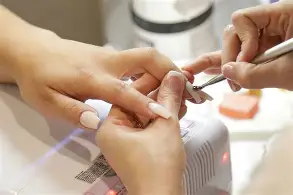

At Nail Glam, we believe in beauty, relaxation, and self-expression. Our team is dedicated to giving you a luxurious experience every time you visit.
Nail Glam is a new and fresh organisation founded in 2025 by Lungelo Nxam.
The organisation pushes forward to become the number 1 nail spot in the whole country. The main cause for this organisation is to create a place where each and every customer is accomodated and meet their expectations in their preferences. With each customer opens a new door to get closer and closer to being number 1.Lungelo : Founder and owner
Xoliswa : Main and lead nail tech for nail care Nozuko : Main and lead nail tech for nail designs